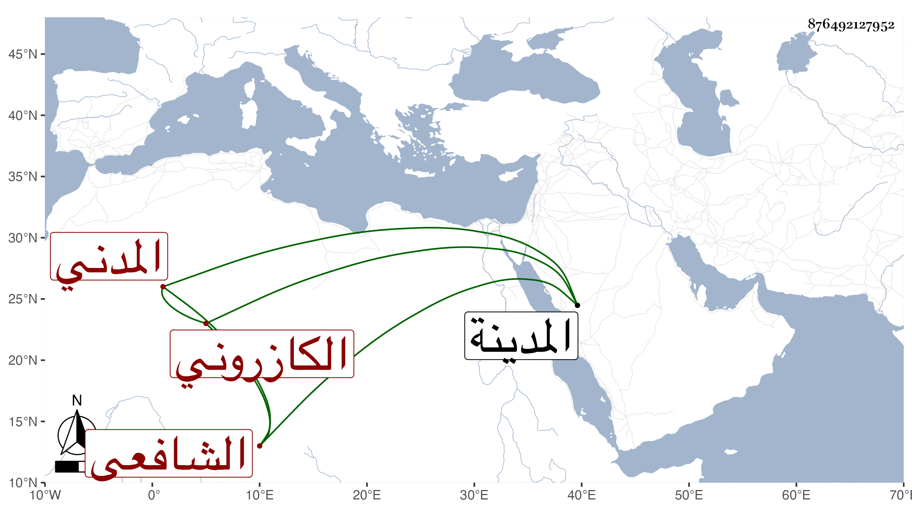

0902Sakhawi.DawLamic.ITO20230111-ara1.EIS1600.876492127952
Biography ID: 876492127952
559
عبد العزيز بن عبد السلام بن محمد بن روزبة بن محمود بن إبراهيم بن أحمد العز أبو محمد بن العز الكازروني المدني الشافعي . ولد في جمادى الأولى سنة اثنتين وستين وسبعمائة بالمدينة ونشأ بها فحفظ القرآن والعمدة والتنبيه ، وعرض على جلال الخجندي الحنفي ومحمد بن علي بن يوسف الزرندي وغيرهما ، وسمع على البدر إبراهيم بن الخشاب والشمس أبي عبد الله محمد بن أحمد بن عثمان الششتري ويحيى بن موسى القسنطيني والعراقي ومما أخذه عنه شرحه للالفية في آخرين ولقي بالمسجد الأقصى في سنة سبع عشرة وثمانمائة الشمس الهروي ومما سمعه عليه بعض شرحه لمسلم والمشارق ووصفه الجمال الكازروني بالفقيه العالم وأبو الفرج المراغي بالامام العالم العلامة الأوحد .
